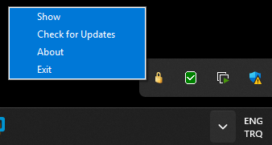
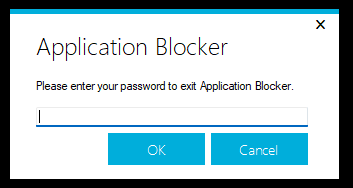

Tray Icon

You can right click to the tray icon at the taskbar to show options. You can show Application Blocker window, check for updates, show about page and completely exit from Application Blocker. When Application Blocker runs at background as hidden, you can click "Show" to open the main window. You will need to enter your password. You can click "Exit" to exit from Application Blocker completely. Remember that password locking does not work when Application Blocker isn't running at background.
